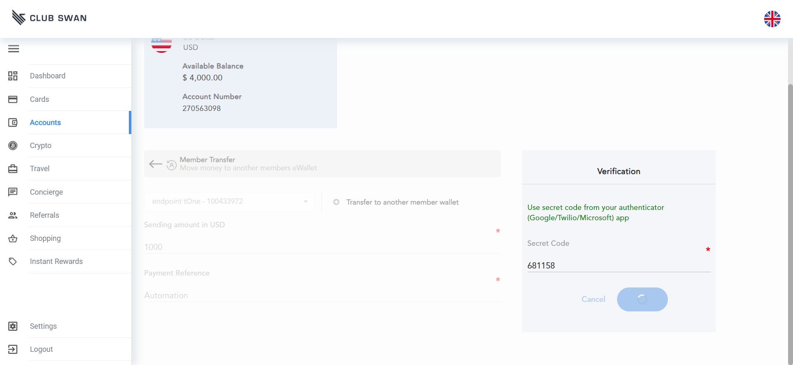
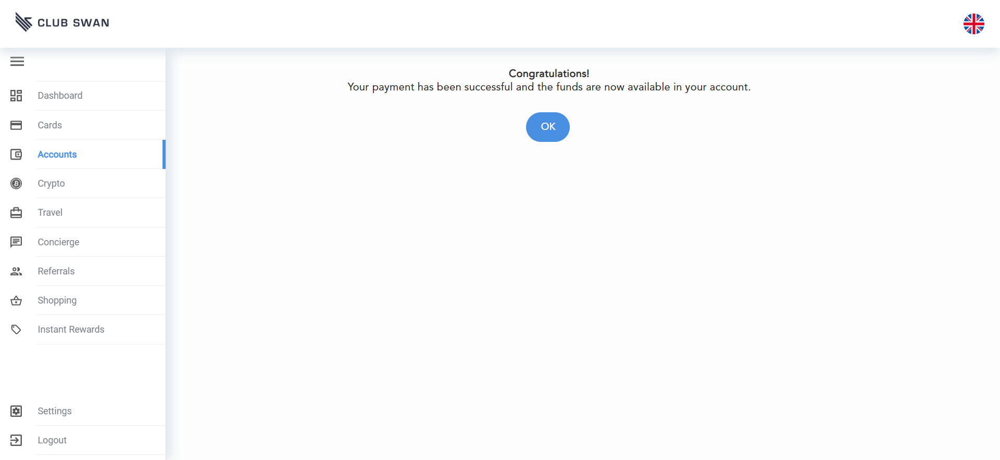
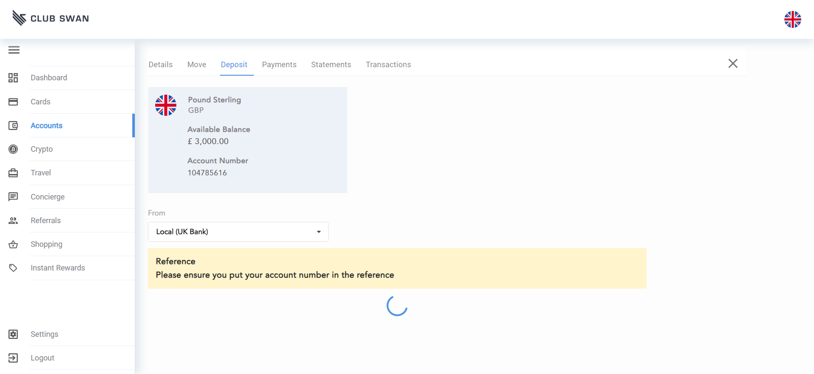

-
Test Accounts Functionality
2:34:09 PM / 00:00:03:428 Fail
Test Accounts Functionality
01.24.2023 2:34:09 PM 01.24.2023 2:34:12 PM 00:00:03:428 · #test-id=1FailVerify CNY Wallet to USD Wallet MoveGiven a valid urlWhen user clicks on CNY walletStep skippedAnd user clicks on move tabStep skippedAnd user clicks on select beneficiary dropdownStep skippedAnd user selects USD walletStep skippedAnd enter amount on sending amount boxStep skippedAnd user clicks confirmStep skippedAnd user enters secret codeStep skippedAnd user clicks confirm againStep skippedAnd transfer successfully completed message is shownStep skippedAnd user clicks on okStep skippedThen user should redirect to wallet details tabStep skippedStepDefinations.LoginStep.takeScraenshotOnFailure(io.cucumber.java.Scenario)Verify CNY Wallet to USD Wallet MoveFailDeposit: Verify Local(UK Bank) Deposit to CNY WalletGiven a valid urlWhen user clicks on CNY walletStep skippedAnd user clicks on depositStep skippedAnd user expend from dropdownStep skippedAnd user selects local(UK Bank)Step skippedThen user should see details of bankStep skippedStepDefinations.LoginStep.takeScraenshotOnFailure(io.cucumber.java.Scenario)Deposit: Verify Local(UK Bank) Deposit to CNY WalletFailDeposit: Verify International (non UK Bank) Deposit to CNY WalletGiven a valid urlWhen user clicks on CNY walletStep skippedAnd user clicks on depositStep skippedAnd user expend from dropdownStep skippedAnd user selects International(non UK Bank)Step skippedThen user should see details of bankStep skippedStepDefinations.LoginStep.takeScraenshotOnFailure(io.cucumber.java.Scenario)Deposit: Verify International (non UK Bank) Deposit to CNY WalletFailDeposit: Verify Crypto Deposit to CNY WalletGiven a valid urlWhen user clicks on CNY walletStep skippedWhen user clicks on depositStep skippedAnd user expend from dropdownStep skippedAnd user selects crypto depositStep skippedAnd user enters sending amount in TBTCStep skippedAnd user clicks on terms and condition check boxStep skippedAnd user clicks confirmStep skippedThen user should see a summaryStep skippedStepDefinations.LoginStep.takeScraenshotOnFailure(io.cucumber.java.Scenario)Deposit: Verify Crypto Deposit to CNY Wallet FailPayments: Verify Transfer to an Existing Member from CNY WalletGiven a valid urlWhen user clicks on CNY walletStep skippedAnd user clicks payments tabStep skippedAnd user clicks on transfer to a member payStep skippedAnd user selects existing beneficiaryStep skippedAnd user enters sending amount in USD and payment referenceStep skippedAnd user checks summary of transfer amountStep skippedAnd clicks confirm buttonStep skippedAnd enter otp for transferStep skippedAnd user clicks confirm button againStep skippedAnd user checks success messageStep skippedAnd press okStep skippedThen user should redirect to detailsStep skippedStepDefinations.LoginStep.takeScraenshotOnFailure(io.cucumber.java.Scenario)Payments: Verify Transfer to an Existing Member from CNY Wallet
FailPayments: Verify Transfer to an Existing Member from CNY WalletGiven a valid urlWhen user clicks on CNY walletStep skippedAnd user clicks payments tabStep skippedAnd user clicks on transfer to a member payStep skippedAnd user selects existing beneficiaryStep skippedAnd user enters sending amount in USD and payment referenceStep skippedAnd user checks summary of transfer amountStep skippedAnd clicks confirm buttonStep skippedAnd enter otp for transferStep skippedAnd user clicks confirm button againStep skippedAnd user checks success messageStep skippedAnd press okStep skippedThen user should redirect to detailsStep skippedStepDefinations.LoginStep.takeScraenshotOnFailure(io.cucumber.java.Scenario)Payments: Verify Transfer to an Existing Member from CNY Wallet FailPayments: Verify Make a payment to a New Individual from CNY WalletGiven a valid urlWhen user clicks on CNY walletStep skippedAnd user clicks payments tabStep skippedAnd clicks on make payment pay buttonStep skippedAnd user clicks on individualStep skippedAnd user clicks on newStep skippedAnd user enters other recipient details for new individualStep skippedAnd user enters bank detailsStep skippedAnd user enters amountStep skippedAnd user selects timing(now)Step skippedAnd user enter referencesStep skippedAnd user clicks on pay for paymentStep skippedAnd check request success message and press okStep skippedThen if payment is complete user should redirect to payments tabStep skippedStepDefinations.LoginStep.takeScraenshotOnFailure(io.cucumber.java.Scenario)Payments: Verify Make a payment to a New Individual from CNY Wallet
FailPayments: Verify Make a payment to a New Individual from CNY WalletGiven a valid urlWhen user clicks on CNY walletStep skippedAnd user clicks payments tabStep skippedAnd clicks on make payment pay buttonStep skippedAnd user clicks on individualStep skippedAnd user clicks on newStep skippedAnd user enters other recipient details for new individualStep skippedAnd user enters bank detailsStep skippedAnd user enters amountStep skippedAnd user selects timing(now)Step skippedAnd user enter referencesStep skippedAnd user clicks on pay for paymentStep skippedAnd check request success message and press okStep skippedThen if payment is complete user should redirect to payments tabStep skippedStepDefinations.LoginStep.takeScraenshotOnFailure(io.cucumber.java.Scenario)Payments: Verify Make a payment to a New Individual from CNY Wallet FailPayments: Verify Make a payment to Existing Individual from CNY WalletGiven a valid urlWhen user clicks on CNY walletStep skippedAnd user clicks payments tabStep skippedAnd clicks on make payment pay buttonStep skippedAnd user clicks on individualStep skippedAnd user clicks on existingStep skippedAnd user selects existing recipient from recipient detailsStep skippedAnd user enters amountStep skippedAnd user selects timing(now)Step skippedAnd user enter referencesStep skippedAnd user clicks on pay for paymentStep skippedAnd check request success message and press okStep skippedThen if payment is complete user should redirect to payments tabStep skippedStepDefinations.LoginStep.takeScraenshotOnFailure(io.cucumber.java.Scenario)Payments: Verify Make a payment to Existing Individual from CNY Wallet
FailPayments: Verify Make a payment to Existing Individual from CNY WalletGiven a valid urlWhen user clicks on CNY walletStep skippedAnd user clicks payments tabStep skippedAnd clicks on make payment pay buttonStep skippedAnd user clicks on individualStep skippedAnd user clicks on existingStep skippedAnd user selects existing recipient from recipient detailsStep skippedAnd user enters amountStep skippedAnd user selects timing(now)Step skippedAnd user enter referencesStep skippedAnd user clicks on pay for paymentStep skippedAnd check request success message and press okStep skippedThen if payment is complete user should redirect to payments tabStep skippedStepDefinations.LoginStep.takeScraenshotOnFailure(io.cucumber.java.Scenario)Payments: Verify Make a payment to Existing Individual from CNY Wallet FailPayments: Verify Make a Payment to New Business from CNY WalletGiven a valid urlWhen user clicks on CNY walletStep skippedAnd user clicks payments tabStep skippedAnd clicks on make payment pay buttonStep skippedAnd user clicks on businessStep skippedAnd user clicks on newStep skippedAnd user enters other recipient details for new businessStep skippedAnd user enters bank detailsStep skippedAnd user enters amountStep skippedAnd user selects timing(now)Step skippedAnd user enter referencesStep skippedAnd user clicks on pay for paymentStep skippedAnd check request success message and press okStep skippedThen if payment is complete user should redirect to payments tabStep skippedStepDefinations.LoginStep.takeScraenshotOnFailure(io.cucumber.java.Scenario)Payments: Verify Make a Payment to New Business from CNY Wallet
FailPayments: Verify Make a Payment to New Business from CNY WalletGiven a valid urlWhen user clicks on CNY walletStep skippedAnd user clicks payments tabStep skippedAnd clicks on make payment pay buttonStep skippedAnd user clicks on businessStep skippedAnd user clicks on newStep skippedAnd user enters other recipient details for new businessStep skippedAnd user enters bank detailsStep skippedAnd user enters amountStep skippedAnd user selects timing(now)Step skippedAnd user enter referencesStep skippedAnd user clicks on pay for paymentStep skippedAnd check request success message and press okStep skippedThen if payment is complete user should redirect to payments tabStep skippedStepDefinations.LoginStep.takeScraenshotOnFailure(io.cucumber.java.Scenario)Payments: Verify Make a Payment to New Business from CNY Wallet FailPayments: Verify Make a Payment to Existing Business from CNY WalletGiven a valid urlWhen user clicks on CNY walletStep skippedAnd user clicks payments tabStep skippedAnd clicks on make payment pay buttonStep skippedAnd user clicks on businessStep skippedAnd user clicks on existingStep skippedAnd user selects existing recipient from recipient detailsStep skippedAnd user enters amountStep skippedAnd user selects timing(now)Step skippedAnd user enter referencesStep skippedAnd user clicks on pay for paymentStep skippedAnd check request success message and press okStep skippedThen if payment is complete user should redirect to payments tabStep skippedStepDefinations.LoginStep.takeScraenshotOnFailure(io.cucumber.java.Scenario)Payments: Verify Make a Payment to Existing Business from CNY Wallet
FailPayments: Verify Make a Payment to Existing Business from CNY WalletGiven a valid urlWhen user clicks on CNY walletStep skippedAnd user clicks payments tabStep skippedAnd clicks on make payment pay buttonStep skippedAnd user clicks on businessStep skippedAnd user clicks on existingStep skippedAnd user selects existing recipient from recipient detailsStep skippedAnd user enters amountStep skippedAnd user selects timing(now)Step skippedAnd user enter referencesStep skippedAnd user clicks on pay for paymentStep skippedAnd check request success message and press okStep skippedThen if payment is complete user should redirect to payments tabStep skippedStepDefinations.LoginStep.takeScraenshotOnFailure(io.cucumber.java.Scenario)Payments: Verify Make a Payment to Existing Business from CNY Wallet FailVerify Details Tab Graph of CNY WalletGiven a valid urlWhen user clicks on CNY walletStep skippedThen user should see a graphStep skippedStepDefinations.LoginStep.takeScraenshotOnFailure(io.cucumber.java.Scenario)Verify Details Tab Graph of CNY Wallet
FailVerify Details Tab Graph of CNY WalletGiven a valid urlWhen user clicks on CNY walletStep skippedThen user should see a graphStep skippedStepDefinations.LoginStep.takeScraenshotOnFailure(io.cucumber.java.Scenario)Verify Details Tab Graph of CNY Wallet FailVerify Transaction Tab of CNY WalletGiven a valid urlWhen user clicks on CNY walletStep skippedAnd user click on transaction tabStep skippedAnd user should see latest pending transactions first(if any) in PENDING TRANSACTIONSStep skippedThen user after scroll down should see latest cleared transaction first in YOUR TRANSACTIONSStep skippedStepDefinations.LoginStep.takeScraenshotOnFailure(io.cucumber.java.Scenario)Verify Transaction Tab of CNY Wallet
FailVerify Transaction Tab of CNY WalletGiven a valid urlWhen user clicks on CNY walletStep skippedAnd user click on transaction tabStep skippedAnd user should see latest pending transactions first(if any) in PENDING TRANSACTIONSStep skippedThen user after scroll down should see latest cleared transaction first in YOUR TRANSACTIONSStep skippedStepDefinations.LoginStep.takeScraenshotOnFailure(io.cucumber.java.Scenario)Verify Transaction Tab of CNY Wallet FailVerify Statement Tab of CNY WalletGiven a valid urlWhen user clicks on CNY walletStep skippedAnd user clicks on statements tabStep skippedAnd if any statement available user clicks on download buttonStep skippedThen statement should be downloadedStep skippedStepDefinations.LoginStep.takeScraenshotOnFailure(io.cucumber.java.Scenario)Verify Statement Tab of CNY Wallet
FailVerify Statement Tab of CNY WalletGiven a valid urlWhen user clicks on CNY walletStep skippedAnd user clicks on statements tabStep skippedAnd if any statement available user clicks on download buttonStep skippedThen statement should be downloadedStep skippedStepDefinations.LoginStep.takeScraenshotOnFailure(io.cucumber.java.Scenario)Verify Statement Tab of CNY Wallet
-
org.openqa.selenium.InvalidArgumentException
12 tests
org.openqa.selenium.InvalidArgumentException
12 failedStatus Timestamp TestName Fail 14:34:09 PM Given a valid url Test Accounts Functionality.Verify CNY Wallet to USD Wallet Move.Given a valid urlFail 14:34:11 PM Given a valid url Test Accounts Functionality.Deposit: Verify Local(UK Bank) Deposit to CNY Wallet.Given a valid urlFail 14:34:11 PM Given a valid url Test Accounts Functionality.Deposit: Verify International (non UK Bank) Deposit to CNY Wallet.Given a valid urlFail 14:34:11 PM Given a valid url Test Accounts Functionality.Deposit: Verify Crypto Deposit to CNY Wallet.Given a valid urlFail 14:34:11 PM Given a valid url Test Accounts Functionality.Payments: Verify Transfer to an Existing Member from CNY Wallet.Given a valid urlFail 14:34:11 PM Given a valid url Test Accounts Functionality.Payments: Verify Make a payment to a New Individual from CNY Wallet.Given a valid urlFail 14:34:12 PM Given a valid url Test Accounts Functionality.Payments: Verify Make a payment to Existing Individual from CNY Wallet.Given a valid urlFail 14:34:12 PM Given a valid url Test Accounts Functionality.Payments: Verify Make a Payment to New Business from CNY Wallet.Given a valid urlFail 14:34:12 PM Given a valid url Test Accounts Functionality.Payments: Verify Make a Payment to Existing Business from CNY Wallet.Given a valid urlFail 14:34:12 PM Given a valid url Test Accounts Functionality.Verify Details Tab Graph of CNY Wallet.Given a valid urlFail 14:34:12 PM Given a valid url Test Accounts Functionality.Verify Transaction Tab of CNY Wallet.Given a valid urlFail 14:34:12 PM Given a valid url Test Accounts Functionality.Verify Statement Tab of CNY Wallet.Given a valid url
-
@CNY_move
1 tests
@CNY_move
1 failedStatus Timestamp TestName Fail 14:34:09 PM Verify CNY Wallet to USD Wallet Move Test Accounts Functionality.Verify CNY Wallet to USD Wallet Move -
@CNY_non_us
2 tests
@CNY_non_us
2 failedStatus Timestamp TestName Fail 14:34:11 PM Deposit: Verify Local(UK Bank) Deposit to CNY Wallet Test Accounts Functionality.Deposit: Verify Local(UK Bank) Deposit to CNY WalletFail 14:34:11 PM Deposit: Verify International (non UK Bank) Deposit to CNY Wallet Test Accounts Functionality.Deposit: Verify International (non UK Bank) Deposit to CNY Wallet -
@move
1 tests
@move
1 failedStatus Timestamp TestName Fail 14:34:09 PM Verify CNY Wallet to USD Wallet Move Test Accounts Functionality.Verify CNY Wallet to USD Wallet Move -
@CNY_common
10 tests
@CNY_common
10 failedStatus Timestamp TestName Fail 14:34:09 PM Verify CNY Wallet to USD Wallet Move Test Accounts Functionality.Verify CNY Wallet to USD Wallet MoveFail 14:34:11 PM Deposit: Verify Crypto Deposit to CNY Wallet Test Accounts Functionality.Deposit: Verify Crypto Deposit to CNY WalletFail 14:34:11 PM Payments: Verify Transfer to an Existing Member from CNY Wallet Test Accounts Functionality.Payments: Verify Transfer to an Existing Member from CNY WalletFail 14:34:11 PM Payments: Verify Make a payment to a New Individual from CNY Wallet Test Accounts Functionality.Payments: Verify Make a payment to a New Individual from CNY WalletFail 14:34:12 PM Payments: Verify Make a payment to Existing Individual from CNY Wallet Test Accounts Functionality.Payments: Verify Make a payment to Existing Individual from CNY WalletFail 14:34:12 PM Payments: Verify Make a Payment to New Business from CNY Wallet Test Accounts Functionality.Payments: Verify Make a Payment to New Business from CNY WalletFail 14:34:12 PM Payments: Verify Make a Payment to Existing Business from CNY Wallet Test Accounts Functionality.Payments: Verify Make a Payment to Existing Business from CNY WalletFail 14:34:12 PM Verify Details Tab Graph of CNY Wallet Test Accounts Functionality.Verify Details Tab Graph of CNY WalletFail 14:34:12 PM Verify Transaction Tab of CNY Wallet Test Accounts Functionality.Verify Transaction Tab of CNY WalletFail 14:34:12 PM Verify Statement Tab of CNY Wallet Test Accounts Functionality.Verify Statement Tab of CNY Wallet
Started
Jan 24, 2023 02:34:08 PM
Ended
Jan 24, 2023 02:34:12 PM
Features Passed
0
Features Failed
1
Features
Scenarios
Steps
Timeline
Tags
| Name | Passed | Failed | Skipped | Others | Passed % |
|---|---|---|---|---|---|
| @CNY_move | 0 | 1 | 0 | 0 | 0% |
| @CNY_non_us | 0 | 2 | 0 | 0 | 0% |
| @move | 0 | 1 | 0 | 0 | 0% |
| @CNY_common | 0 | 10 | 0 | 0 | 0% |